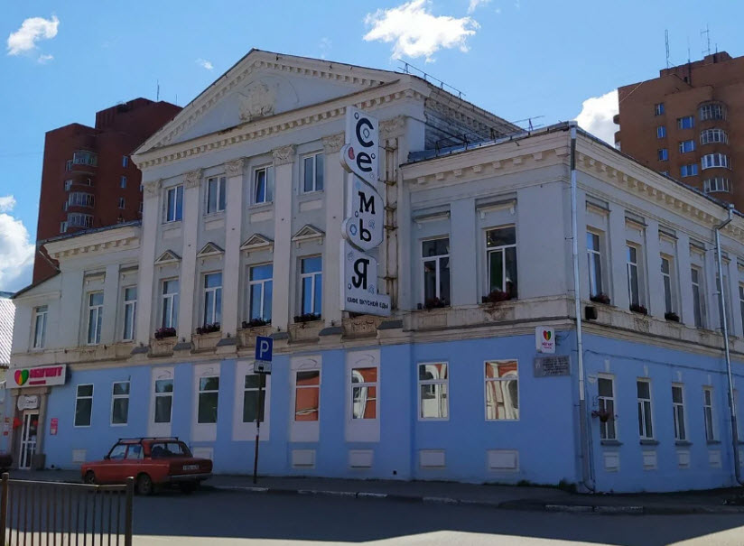
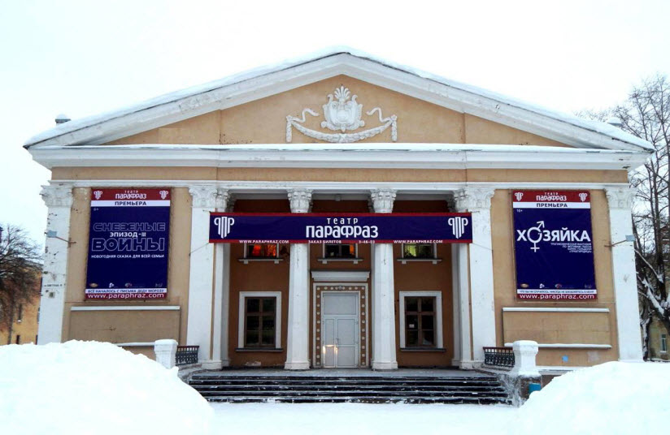
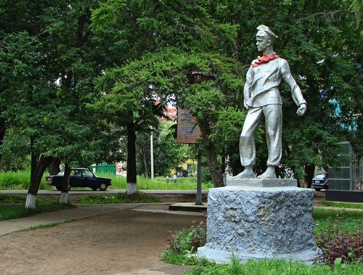
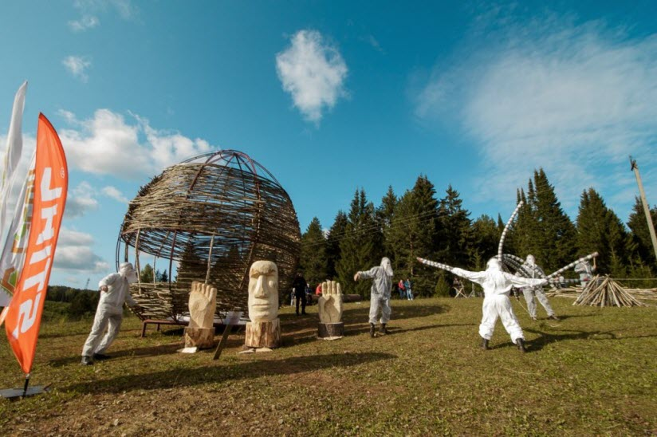
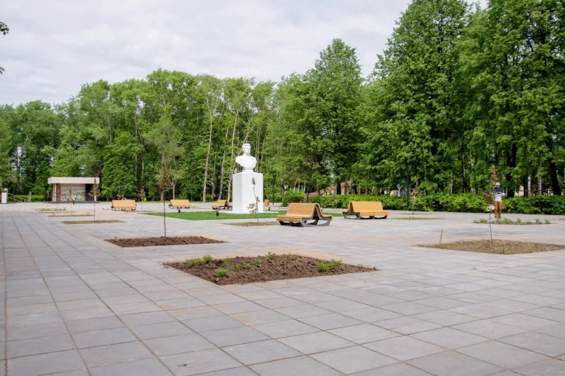
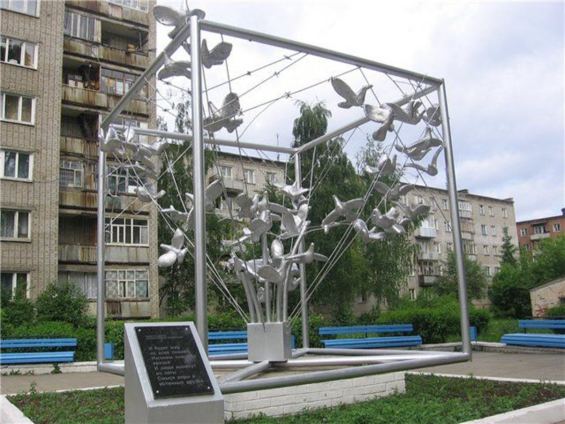

Какие достопримечательности посетить
МКПО и ВУЗЫ Удмуртии
Куда сходить погулять
Где поесть
Где остановиться
Menu
Достопримечательности Глазова

Дом купцов Смагиных-Тимофеевых
×

Драматический театр «Парафраз»
×
Дом купца М.И. Столбова
×
Монумент Победы
×

Памятник Павлику Морозову
×

Режим работы: c 09.00 до 22.00">
Парк «ДондыДор»
×

Режим работы: круглосуточно.">
Парк им. Максима Горького
×

Памятник Жертвам политических репрессий
×